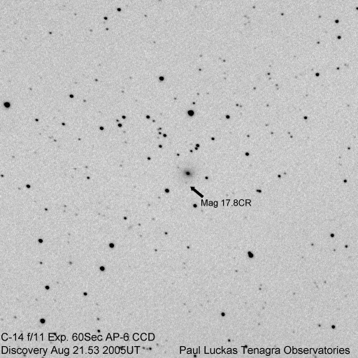

Hot on the heels of our first discovery comes our second a month later.
(click on image for larger version)

Circular No. 8586 Central Bureau for Astronomical Telegrams INTERNATIONAL ASTRONOMICAL UNION Mailstop 18, Smithsonian Astrophysical Observatory, Cambridge, MA 02138, U.S.A. IAUSUBS@CFA.HARVARD.EDU or FAX 617-495-7231 (subscriptions) CBAT@CFA.HARVARD.EDU (science) URL http://cfa-www.harvard.edu/iau/cbat.html
SUPERNOVA 2005dk IN IC 4882 P. Luckas, Perth, W. Australia; O. Trondal, Oslo, Norway; and M. Schwartz, Patagonia, AZ, report the discovery of an apparent supernova on unfiltered CCD frames taken with the 0.35-m Tenagra telescope at Perth; available approximate magnitudes for 2005dk: July 10.61 UT, [18.5; Aug. 21.53, 17.8; 22.62, 16.6. SN 2005dk is located at R.A. = 19h40m23s.71, Decl. = -55o12'05".1 (equinox 2000.0), which is 3".4 east and 16".2 south of IC 4882.
Electronic Telegram No. 245
SUPERNOVAE 2005dk, 2005dn, 2005dy, 2005eb, 2005el, 2005eu, 2005ev N. Morrell, G. Folatelli and M. Hamuy, on behalf of the Carnegie Supernova Project, report spectroscopic observations (range 380-930 nm) of SN 2005dk (cf. IAUC 8586), SN 2005dn (cf. IAUC 8589), and SN 2005el (cf. IAUC 8604) obtained on Sept. 26.00, 26.05, and 26.32 UT, respectively, with the du Pont 2.5-m telescope (+ WFCCD spectrograph) at the Las Campanas Observatory. SN 2005dk is a type-II supernova about one month after explosion. Strong P-Cyg profiles of Balmer lines are present. Spectral lines detected in a spectrum of the host galaxy, IC 4882, were used to derive a redshift of 0.01574. Using this redshift value, an expansion velocity of about 7000 km/s was measured from the absorption minimum of H_beta.